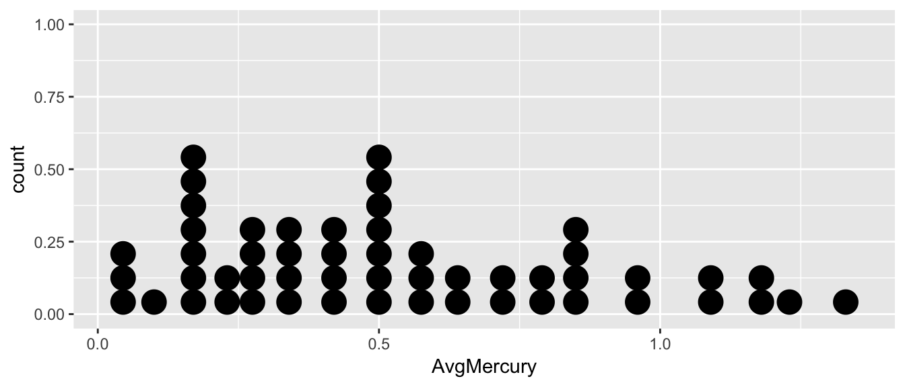
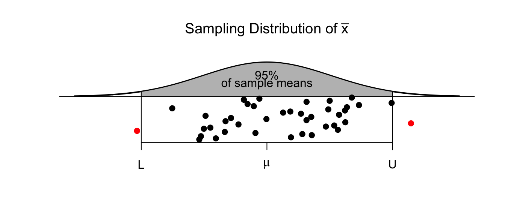
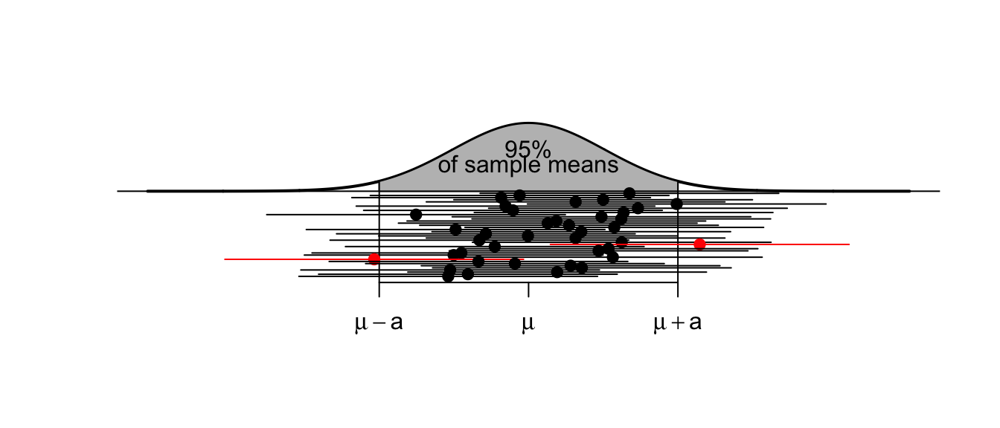

Chapter 3 Confidence Intervals via Bootstrapping
# Every chapter, we will load all the librarys we will use at the beginning
# of the chapter.
library(mosaic) # for the resample, shuffle, and do functions
library(ggplot2) # graphing functions
library(dplyr) # data summary tools3.1 Theory of Bootstrapping
Suppose that we had a population of interest and we wish to estimate the mean of that population (the population mean we’ll denote as \(\mu\)). We can’t observe every member of the population (which would be prohibitively expensive) so instead we take a random sample and from that sample calculate a sample mean (which we’ll denote \(\bar{x}\)). We believe that \(\bar{x}\) will be a good estimator of \(\mu\), but it will vary from sample to sample and won’t be exactly equal to \(\mu\).
Next suppose we wish to ask if a particular value for \(\mu\), say \(\mu_{0}\), is consistent with our observed data? We know that \(\bar{x}\) will vary from sample to sample, but we have no idea how much it will vary between samples. However, if we could understand how much \(\bar{x}\) varied sample to sample, we could answer the question. For example, suppose that \(\bar{x}=5\) and we know that \(\bar{x}\) varied about \(\pm2\) from sample to sample. Then I’d say that possible values of \(\mu_{0}\) in the interval \(3\) to \(7\) \(\left(5\pm2\right)\) are reasonable values for \(\mu\) and anything outside that interval is not reasonable.
Therefore, if we could take many, many repeated samples from the population and calculate our test statistic \(\bar{x}\) for each sample, we could rule out possible values of \(\mu\). Unfortunately we don’t have the time or money to repeatedly sample from the actual population, but we could sample from our best approximation to what the population is like.
Suppose we were to sample from a population of shapes, and we observed \(4/9\) of the sample were squares, \(3/9\) were circles, and a triangle and a diamond. Then our best guess of what the population that we sampled from was a population with \(4/9\) squares, \(3/9\) circles, and \(1/9\) of triangles and diamonds.
multiplot(sample.plot, population.plot, cols=2)## Loading required package: grid
Using this approximated population (which is just many many copies of our sample data), we can repeated sample \(\bar{x}^{*}\) values to create an estimate of the sampling distribution of \(\bar{x}\).
Because our approximate population is just an infinite number of copies of our sample data, then sampling from the approximate population is equivalent to sampling with replacement from our sample data. If I take \(n\) samples from \(n\) distinct objects with replacement, then the process can be thought of as mixing the \(n\) objects in a bowl and taking an object at random, noting which it is, replace it into the bowl, and then draw the next sample. Practically, this means some objects will be selected more than once and some will not be chosen at all. To sample our observed data with replacement, we’ll use the resample() function in the mosaic package. We see that some rows will be selected multiple times, and some will not be selected at all.
Testing.Data <- data.frame(
name=c('Alison','Brandon','Chelsea','Derek','Elise'))
Testing.Data## name
## 1 Alison
## 2 Brandon
## 3 Chelsea
## 4 Derek
## 5 Elise# Sample rows from the Testing Data (with replacement)
resample(Testing.Data)## name orig.id
## 1 Alison 1
## 4 Derek 4
## 3 Chelsea 3
## 1.1 Alison 1
## 5 Elise 5Notice Alison has selected twice, while Brandon has not been selected at all.
The sampling from the estimated population via sampling from the observed data is called bootstrapping because we are making no distributional assumptions about where the data came from, and the idiom “Pulling yourself up by your bootstraps” seemed appropriate.
Example: Mercury Levels in Fish from Florida Lakes
A data set provided by the Lock\(^{5}\) introductory statistics textbook looks at the mercury levels in fish harvested from lakes in Florida. There are approximately 7,700 lakes in Florida that are larger than 10 acres. As part of a study to assess the average mercury contamination in these lakes, a random sample of \(n=53\) lakes, an unspecified number of fish were harvested and the average mercury level (in ppm) was calculated for fish in each lake. The goal of the study was to assess if the average mercury concentration was greater than the 1969 EPA “legally actionable level” of 0.5 ppm.
# read the Lakes data set
Lakes <- read.csv('http://www.lock5stat.com/datasets/FloridaLakes.csv')
# make a nice picture... dot plots are very similar to histograms
# but in this case, my y-axis doen't make any sense.
ggplot(Lakes, aes(x=AvgMercury)) +
geom_dotplot()## `stat_bindot()` using `bins = 30`. Pick better value with `binwidth`.
We can calculate mean average mercury level for the \(n=53\) lakes
Lakes %>% summarise(xbar = mean( AvgMercury ))## xbar
## 1 0.5271698The sample mean is greater than \(0.5\) but not by too much. Is a true population mean concentration \(\mu_{Hg}\) that is \(0.5\) or less incompatible with our observed data? Is our data sufficient evidence to conclude that the average mercury content is greater than \(0.5\)? Perhaps the true average mercury content is less than (or equal to) \(0.5\) and we just happened to get a random sample that with a mean greater than \(0.5\)?
The first step in answering these questions is to create an estimate of the sampling distribution of \(\bar{x}_{Hg}\). To do this, we will sample from the approximate population of lakes, which is just many many replicated copies of our sample data.
# create the sampling distribution of xbar
SamplingDist <- do(10000) * resample(Lakes) %>% summarise(xbar = mean(AvgMercury))
# what columns does the data frame "SamplingDist" have?
head(SamplingDist)## xbar
## 1 0.5111321
## 2 0.5043396
## 3 0.5252830
## 4 0.5362264
## 5 0.4992453
## 6 0.5960377# show a histogram of the sampling distribution of xbar
ggplot(SamplingDist, aes(x=xbar)) +
geom_histogram() +
ggtitle('Estimated Sampling distribution of xbar' )
3.2 Quantile-based Confidence Intervals
In many cases we have seen, the sampling distribution of a statistic is centered on the parameter we are interested in estimating and is symmetric about that parameterThere are actually several ways to create a confidence interval from the estimated sampling distribution. The method presented here is called the “percentile” method and works when the sampling distribution is symmetric and the estimator we are using is unbiased. For example, we expect that the sample mean \(\bar{x}\) should be a good estimate of the population mean \(\mu\) and the sampling distribution of \(\bar{x}\) should look something like the following.

There are two points, (call them \(L\) and \(U\)) where for our given sample size and population we are sampling from, where we expect that \(95\%\) of the sample means to fall within. That is to say, \(L\) and \(U\) capture the middle \(95\%\) of the sampling distribution of \(\bar{x}\).

These sample means are randomly distributed about the population mean \(\mu\). Given our sample data and sample mean \(\bar{x}\), we can examine how our simulated values of \(\bar{x}^{*}\) vary about \(\bar{x}\). I expect that these simulated sample means \(\bar{x}^{*}\) should vary about \(\bar{x}\) in the same way that \(\bar{x}\) values vary around \(\mu\). Below are three estimated sampling distributions that we might obtain from three different samples and their associated sample means.

For each possible sample, we could consider creating the estimated sampling distribution of \(\bar{X}\) and calculating the \(L\) and \(U\) values that capture the middle \(95\%\) of the estimated sampling distribution. Below are twenty samples, where we’ve calculated this interval for each sample.

Most of these intervals contain the true parameter \(\mu\), that we are trying to estimate. In practice, I will only take one sample and therefore will only calculate one sample mean and one interval, but I want to recognize that the method I used to produce the interval (i.e. take a random sample, calculate the mean and then the interval) will result in intervals where only \(95\%\) of those intervals will contain the mean \(\mu\). Therefore, I will refer to the interval as a \(95\%\) confidence interval.
After the sample is taken and the interval is calculated, the numbers lower and upper bounds of the confidence interval are fixed. Because \(\mu\) is a constant value and the confidence interval is fixed, nothing is changing. To distinguish between a future random event and the fixed (but unknown) outcome of if I ended up with an interval that contains \(\mu\) and we use the term confidence interval instead of probability interval.
# create the sampling distribution of xbar
SamplingDist <- do(10000) * resample(Lakes) %>% summarise(xbar=mean(AvgMercury))
# show a histogram of the sampling distribution of xbar
ggplot(SamplingDist, aes(x=xbar, y=..density..)) +
geom_histogram() +
ggtitle('Estimated Sampling distribution of xbar')
# calculate the 95% confidence interval using middle 95% of xbars
quantile( SamplingDist$xbar, probs=c(.025, .975) )## 2.5% 97.5%
## 0.4375472 0.6211368There are several ways to interpret this interval.
The process used to calculate this interval (take a random sample, calculate a statistic, repeatedly resample, and take the middle \(95\%\)) is a process that results in an interval that contains the parameter of interest on \(95\%\) of the samples we could have collected, however we don’t know if the particular sample we collected and its resulting interval of \(\left(0.44,\,0.62\right)\) is one of the intervals containing \(\mu\).
We are \(95\%\) confident that \(\mu\) is in the interval \(\left(0.44,\,0.62\right)\). This is delightfully vague and should be interpreted as a shorter version of the previous interpretation.
The interval \(\left(0.44,\,0.62\right)\) is the set of values of \(\mu\) that are consistent with the observed data at the \(0.05\) threshold of statistical significance for a two-sided hypothesis test
Example: Fuel Economy
Suppose we have data regarding fuel economy of \(5\) new vehicles of the same make and model and we wish to test if the observed fuel economy is consistent with the advertised \(31\) mpg at highway speeds. We the data are
CarMPG <- data.frame( ID=1:5, mpg = c(31.8, 32.1, 32.5, 30.9, 31.3) )
CarMPG %>% summarise( xbar=mean(mpg) )## xbar
## 1 31.72We will use the sample mean to assess if the sample fuel efficiency is consistent with the advertised number. Because these cars could be considered a random sample of all new cars of this make, we will create the estimated sampling distribution using the bootstrap resampling of the data.
SamplingDist <- do(10000) * resample(CarMPG) %>% summarise(xbar=mean(mpg))
# show a histogram of the sampling distribution of xbar
ggplot(SamplingDist, aes(x=xbar)) +
geom_histogram() +
ggtitle('Estimated Sampling distribution of xbar')## `stat_bin()` using `bins = 30`. Pick better value with `binwidth`.
# calculate the 95% confidence interval using middle 95% of xbars
quantile( SamplingDist$xbar, probs=c(.025, .975) )## 2.5% 97.5%
## 31.24 32.20We see that the \(95\%\) confidence interval is \(\left(31.2,\,32.2\right)\) and does not actually contain the advertised \(31\) mpg. However, I don’t think we would object to a car manufacturer selling us a car that is better than advertised.
Example: Pulse Rate of College Students
In the package Lock5Data, the dataset GPAGender contains information taken from undergraduate students in an Introductory Statistics course. This is a convenience sample, but could be considered representative of students at that university. One of the covariates measured was the students pulse rate and we will use this to create a confidence interval for average pulse of students at that university.
First we’ll look at the raw data.
library(Lock5Data) # load the package
data(GPAGender) # from the package, load the dataset
# Now a nice histogram
ggplot(GPAGender, aes(x=Pulse, y=..density..)) +
geom_histogram(binwidth=2) +
ggtitle('Sample Data')
It is worth noting this was supposed to be measuring resting heart rates, but there are two students had extremely high pulse rates and six with extremely low rates. The two high values are approximately what you’d expect from someone currently engaged in moderate exercise and the low values are levels we’d expect from highly trained endurance athletes.
# Summary Statistics
GPAGender %>% summarise(xbar = mean(Pulse),
StdDev = sd(Pulse))## xbar StdDev
## 1 69.90379 12.08569So the sample mean is \(\bar{x}=69.9\) but how much should we expect our sample mean to vary from sample to sample when our sample size is \(n=343\) people? We’ll estimate the sampling distribution of \(\bar{X}\) using the bootstrap.
# Create the bootstrap replicates
SampDist <- do(10000) * resample(GPAGender) %>% summarise(xbar = mean(Pulse))
ggplot(SampDist, aes(x=xbar, y=..density..)) +
geom_histogram(binwidth=.2) +
ggtitle('Sampling Distribution of Mean(Pulse)')
Just by sampling variability, we expect the sampling mean \(\bar{X}\) to vary from approximately 68 to 72. The appropriate quantiles for a \(95\%\) bootstrap confidence interval are actually
quantile( SampDist$xbar, probs=c(0.025, 0.975) )## 2.5% 97.5%
## 68.65015 71.189583.3 Exercises
For several of these exercises, we will use data sets from the R package Lock5Data, which greatly contributed to the pedagogical approach of these notes. Install the package from CRAN using the RStudio point-and-click interface Tools -> Install Packages….
Load the dataset
BodyTemp50from the Lock5Data package. This is a dataset of 50 healthy adults. Unfortunately the documentation doesn’t give how the data was collected, but for this problem we’ll assume that it is a representative sample of healthy US adults.library(Lock5Data) data( BodyTemp50 ) ?BodyTemp50One of the columns of this dataset is the Pulse of the 50 data points, which is the number of heartbeats per minute.
- Create a histogram of the observed pulse values. Comment on the graph and aspects of the graph that might be of scientific interest.
- Calculate the sample mean \(\bar{x}\) and sample standard deviation \(s\) of the pulses.
- Create a dataset of 10000 bootstrap replicates of \(\bar{x}^{*}\).
- Create a histogram of the bootstrap replicates. Calculate the mean and standard deviation of this distribution. Notice that the standard deviation of the distribution is often called the Standard Error of \(\bar{x}\) and we’ll denote it as \(\sigma_{\bar{x}}\).
- Using the bootstrap replicates, create a 95% confidence interval for \(\mu\) , the average adult heart rate.
- Calculate the interval \[\left(\bar{x}-2\cdot\hat{\sigma}_{\bar{x}}\,,\,\;\;\bar{x}+2\cdot\hat{\sigma}_{\bar{x}}\right)\] and comment on its similarity to the interval you calculated in part (e).
- Load the dataset
EmployedACSfrom theLock5Datapackage. This is a dataset drawn from American Community Survey results which is conducted monthly by the US Census Bureau and should be representative of US workers. The columnHoursWkrepresents the number of hours worked per week.- Create a histogram of the observed hours worked. Comment on the graph and aspects of the graph that might be of scientific interest.
- Calculate the sample mean \(\bar{x}\) and sample standard deviation \(s\) of the worked hours per week.
- Create a dataset of 10000 bootstrap replicates of \(\bar{x}^{*}\).
- Create a histogram of the bootstrap replicates. Calculate the mean and standard deviation of this distribution. Notice that the standard deviation of the distribution is often called the Standard Error of \(\bar{x}\) and we’ll denote it as \(\sigma_{\bar{x}}\).
- Using the bootstrap replicates, create a 95% confidence interval for \(\mu\), the average worked hours per week.
- Calculate the interval \[\left(\bar{x}-2\cdot\hat{\sigma}_{\bar{x}}\,,\,\;\;\bar{x}+2\cdot\hat{\sigma}_{\bar{x}}\right)\] and comment on its similarity to the interval you calculated in part (e).